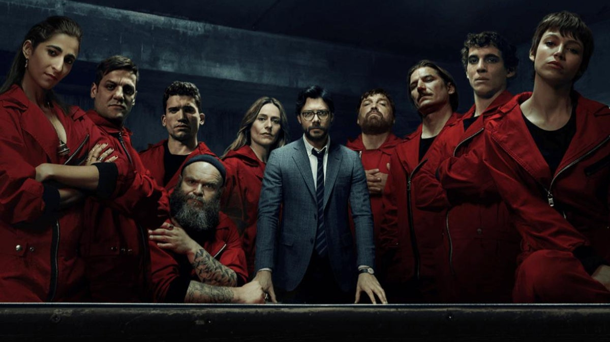

星座-天蠍座
天蠍座的人的性格悶騷，外表是冷靜的、但內心相當澎派 有超強的耐力、意志力、堅強的個性 容易愛恨分明，報復心也很強 心機比較重一點、能洞悉事情的真相 有很高的物質需求，但也會願意付出很多去獲得想要的物質生活
血型-B型
B型血的人給人第一眼的印象，多半為:開朗、樂觀、愛說話、反應靈敏旦吹毛求疵。在談話場合中，B型血的人是個應對自如，終究藏不住話的人，可巧妙地抓住對方的思緒，確實掌握話題之進行。當然，這樣的人也就經常在無意中「攻擊到他人」而不自覺。
喜歡的影集-紙房子
是一部西班牙搶劫犯罪影集。講述在馬德里西班牙皇家造幣廠一場準備充分、歷時數天的搶案。搶匪打算劫持人質，印刷24億歐元後攜款潛逃。搶案有8名搶匪，代號以城市命名，並由「教授」（艾瓦羅·莫特飾）在場外指揮行動。故事主要集中在搶匪「東京」（烏蘇拉·可貝蘿飾）身上，而他們要與銀行內的人質與外面的警方交戰。存活的搶匪被迫離開藏身處，並在新成員的幫助之下策劃搶劫西班牙銀行。

學習韓文
因為常常看韓劇的關係，開始對韓國文化產生興趣，在高中升大學的暑假就開始自學了一些韓文。
감사합니다.